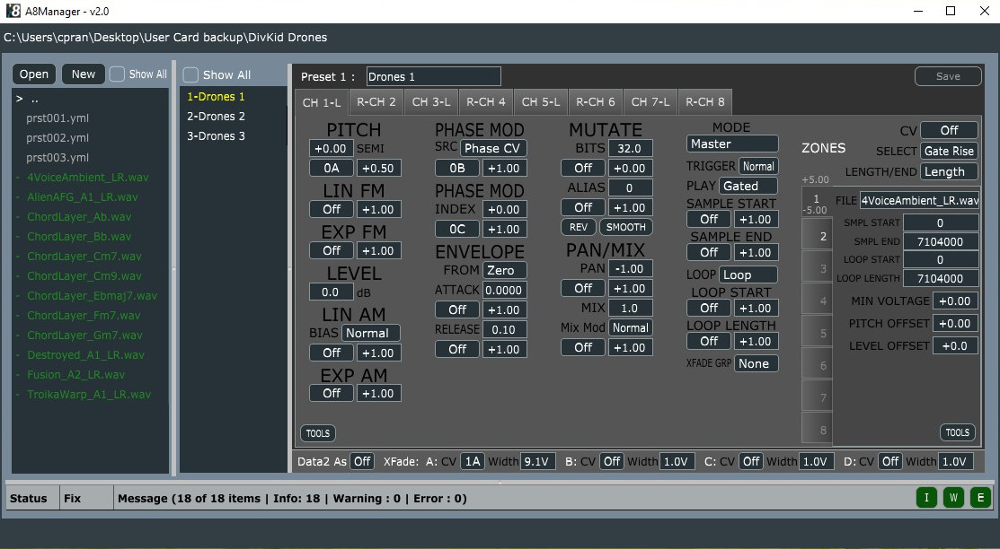

A8 Manager
Editor for Rossum Electro-Music Assimil8or


The A8Manager is a Preset Editor for the Rossum Electro-Music Assimil8or, an 8 channel sampler for Eurorack. It edits the presets on the SD Card, as well as validates some common errors when preparing samples for the Assimil8or. It is an open source cross platform application currently available for Windows and Mac. The first release is compatible with the v2.0 firmware, with an update for the 3.0 firmware coming. Currently it is a very basic editor, but there are plenty of useful features on the list, along with a UI update.